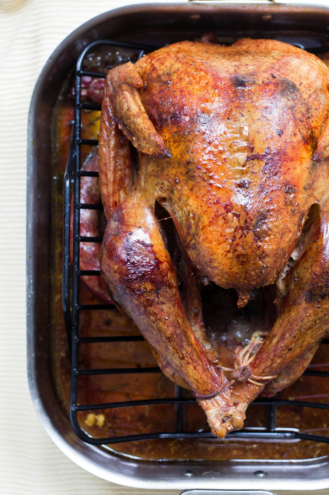

Roasted Chicken
Home

Beautifully cooked roast chicken
This is how your chicken should look after following this recipe.
Ingredients for 4 people
- Free-range chicken
- Olive oil
- Thyme
- Rosemary
- Finely chopped garlic
- Peeled garlic
- Lemon
- Salt
- Pepper
Préparation
Temps total :1 h 35
- Préparation :20 min
- Repos : 15 min
- Cuisson : 1 h
Steps
-
Preheat the oven to 220°C (thermostat 7). In a small bowl, mix well the
oil, thyme, rosemary and chopped garlic.
-
Fold the wings under the chicken and carefully clear the skin from the
breasts. Rub the meat underneath the skin with the oil mixture and the
cavity and outside of the chicken. Put the garlic cloves and lemon in
the cavity. Tie the legs together. Salt and pepper.
-
Transfer the chicken to the broiler rack. Roast for one hour. Remove
from the oven and tilt the chicken in the broiler pan so that the juice
escapes from the cavity. Sprinkle with juice and return the chicken to
the oven.
-
Place the chicken in a serving dish and let stand for 15 minutes. Cut
and serve with rice, fries, etc. To reduce fat avoid eating the skin.